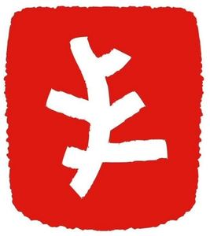

Trade Mark Journal No.2025/012 21 March 2025
WO0000001843233 (3,5)
Office of origin: European Union Intellectual Property Office (EUIPO)
Date of International Registration:29 October 2024
Date of designation in the UK:
29 October 2024

The mark contains the colours red and white.
International priority date claimed: 21 May 2024
(European Union Intellectual Property Office (EUIPO))
(019029718)
- Class 3
- Abrasive paper; abrasive paper for use on the fingernails; adhesives for cosmetic purposes; after-shave balms; after-shave creams; after-shave gel; after-shave lotions; after-sun creams; after-sun lotions; after-sun milk; age retardant gel; age retardant lotion; air fragrance preparations; animal grooming preparations; anti-ageing creams; anti-ageing moisturiser; anti-ageing serum; anti-wrinkle cream; antiperspirants for personal use; aromatherapy creams; aromatherapy lotions; aromatherapy oils; aromatic essential oils; potpourri sachets for incorporating in aromatherapy pillows; aromatic potpourris; aromatics for fragrances; artificial eyelashes; artificial nails; artificial tanning preparations; artificial pumice stone; astringents for cosmetic purposes; balms other than for medical purposes; bar soap; bath and shower preparations; bath bombs; bath and shower gels; bath creams; bath foams; bath oils for cosmetic purposes; bath salts, not for medical purposes; beard care preparations; beauty care preparations; beauty creams for body care; beauty creams; beauty gels; beauty lotions; beauty care cosmetics; beauty masks; beauty masks for hands; beauty preparations for the hair; beauty serums; beauty soap; bleaching preparations [decolorants] for cosmetic purposes; bleaching preparations for the hair; blemish balm creams; blended essential oils; blush; blush pencils; body and facial butters; body and facial creams [cosmetics]; body and facial gels [cosmetics]; body cleansing foams; body cream for cosmetic use; body emulsions for cosmetic use; body lotions; body massage oils; body moisturisers; body milks; body oil; body scrubs [cosmetic]; body shampoos; body talcum powder; breath fresheners; bubble bath preparations; cakes of soap for body washing; cakes of soap for household cleaning purposes; cheek rouges; chalk for make-up; cleaning masks for the face; cleaning pads impregnated with cosmetics; cleaning preparations for personal use; cleansing milk for cosmetic purposes; cloths impregnated with a detergent for cleaning; collagen preparations for cosmetic purposes; cologne water; color-removing preparations; color-removing preparations for hair; coloring preparations for cosmetic purposes; colour cosmetics; colouring lotions for the hair; compacts containing make-up; concealers; conditioners for use on the hair; cosmetics; cosmetic body scrubs; cosmetic creams and lotions; cosmetic creams for skin care; cosmetic dyes; cosmetic hair care preparations; cosmetic-impregnated tissues; cosmetic kits; cosmetic nail care preparations; cosmetic oils; cosmetic preparations for slimming purposes; cosmetic preparations for skin care; cosmetic preparations for body care; cosmetic preparations for the hair and scalp; cosmetic preparations for bath and shower; cosmetic rouges; cosmetic soaps; cosmetic sun-protecting preparations; cosmetic sun-tanning preparations; cosmetic sunscreen preparations; cream foundation; fragrance sachets; deodorant preparations for personal use; dentifrices; depilatories; depilatory preparations; detergents for household use; dry shampoos; eau de cologne; eau de parfum; eau de toilette; essences for skin care; essential oils; exfoliants; eye care products, non-medicated; eye cosmetics; eye pencils; eye shadows; eye make-up; eyelashes; face and body creams; face and body masks; facial serum for cosmetic use; false eyelashes; false fingernails; foot masks for skin care; foundation; fragrance preparations; hair cosmetics; hair colouring preparations; hair decolorant preparations; hair grooming preparations; hair removal preparations; hairspray; hand creams; hand cleaning preparations; hand masks for skin care; incense; lip cosmetics; make-up; make-up preparations for the face and body; make-up removing preparations; mascara; moisturisers [cosmetics]; mouthwashes; natural cosmetics; pencils for cosmetic use; pedicure preparations; perfume; perfumery products; perfumery, essential oils; potpourris [fragrances]; pro-collagen for cosmetic purposes; refill packs for body cleansing product dispensers; refill packs for cosmetics dispensers; refill packs for hand soap dispensers; refill packs for shampoo dispensers; refill packs for hair fixer dispensers; refill packs for shower gel dispensers; refill packs for skin care cream dispensers; room fragrancing preparations; rouges; scents; shampoo; sets of cosmetic oral care products; shampoos for animals [non-medicated grooming preparations]; shaving preparations; skincare cosmetics; skincare preparations; soaps for body care; soaps for personal use; soaps for household use; talc [toiletries]; tissues impregnated with cosmetic lotions; toilet water; toiletry preparations; toothpastes; wax (depilatory -).
- Class 5
- Pharmaceutical, veterinary and sanitary preparations; nutritional supplements for medical purposes; medicinal drinks; dietetic sugar for medical use; dietetic sugar substitutes for medical use; medical preparation for slimming purposes; medicinal herbs; herbal teas for medicinal purposes; medicinal tea; mineral food supplements; pharmaceutical preparations for skin care; protein dietary supplements; therapeutic medicated bath preparations; vitamin preparations; medicated candy; glucose for medical purposes; nutritional supplements; nutraceuticals for use as a dietary supplement; dental preparations and articles, and medicated dentifrices; medicated soap; disinfectant soap; pharmaceutical preparations; sanitary preparations for medical use; medicated skin care preparations; dietary fibre; dietetic substances adapted for medical use; dietetic foodstuff for medical purposes; dietetic beverages adapted for medical purposes; nutritional additives to foodstuffs for animals, for medical purposes; nutritional additives for medical use; medical preparations for slimming purposes; medicines for human purposes; medicinal infusions; homeopathic medicines; preparations of trace elements for human and animal use; therapeutic preparations for the bath; oxygen baths; sterilizing preparations; nutritive substances for microorganisms; air purifying preparations; disinfectants for hygiene purposes; disinfecting handwash; aseptic cotton; absorbent cotton; dental lacquer; dental abrasives; first-aid boxes, filled; sanitary pads; tissues impregnated with pharmaceutical lotions; depuratives; medicated creams; medicated lotions; skin care oils [medicated].
L'Occitane International S.A.
Representative: BRANDSTOCK LEGAL RECHTSANWALTSGESELLSCHAFT MBH, Möhlstr. 2, 81675 München, GERMANY